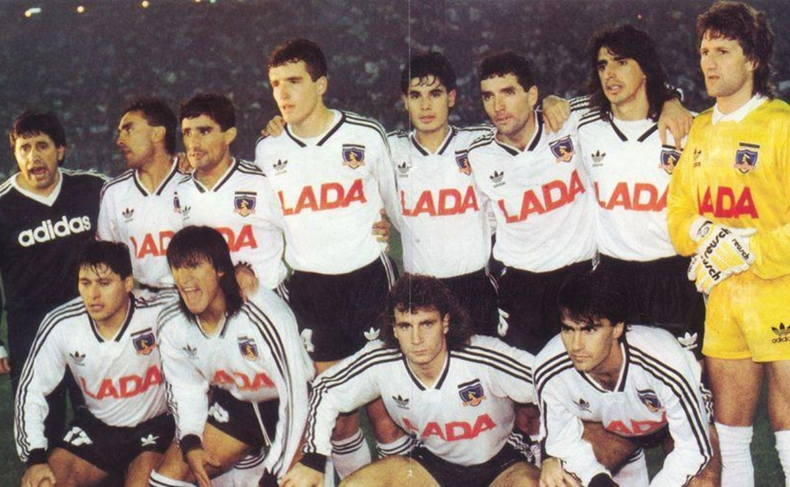

Club deportivo Colo Colo.
Fue fundado el año 1925 por un grupo de antiguos jugadores de Magallanes liderados por David Arellanos.
El color del uniforme desde su fundación a la fecha son el blanco y negro. En el escudo se han mantenido los colores de la bandera de Chile.
El año 1991 se convirtió en campeón de la Copa Libertadores, siendo así el primer y único equipo chileno a la fecha en poseer el título.
